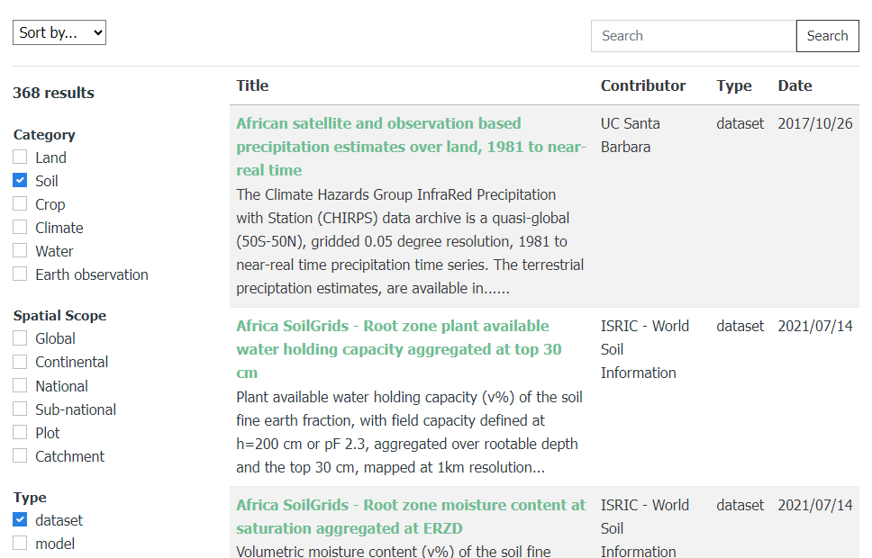
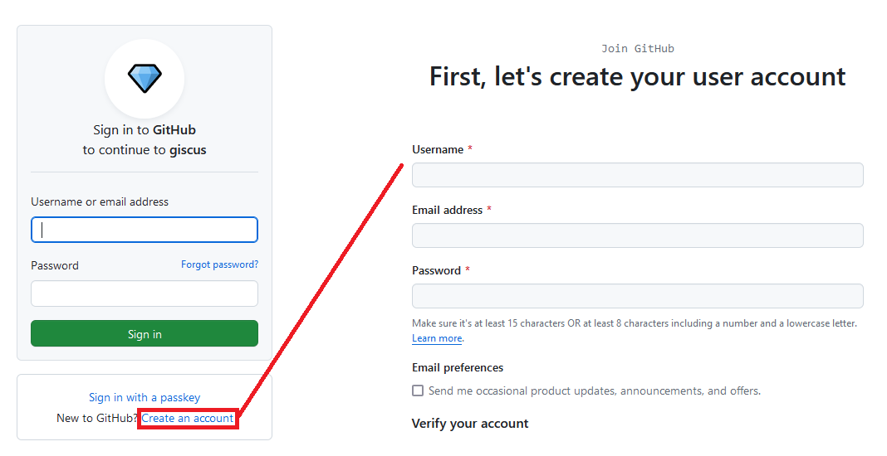
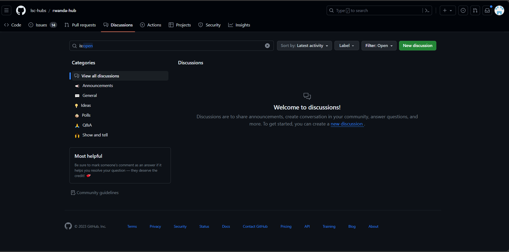

User Guideline LSC Hubs
User Guideline LSC Hubs
This document is a guideline for usage of the Land Soil Crop hub.
What is a Land Soil Crop hub?
Decision support tools in agronomy heavily depend on acurate environmental and crop data. Many data are available, but often disperse and hard to locate. Land Soil Crop hubs aim to faciliate findability and accessibility of relevant data. Hubs facilitate data and knowledge to be stored, described, processed and visualized.
The hubs describe a number of different resources relevant to the Land Soil Cop community.
Datasets
Datasets are either a source for predictions, as well as can be the result of a prediction.
Services
Services are offered by organizations to facilitate access to data and knowlegde. Services can vary from web services (API’s), SMS services, brochures, up to on site visits.
Models
Predictions on distribution of environmental parameters in time and space, as well as yield predictions based on these distribution, are calculated using statistical, rule based, or machine learning models. Commonly available models are described as resources in the hub.
Software
In the hub various software components can be described which either enable you or your stakeholders to visualise and analyse relevant data and knowledge sources
Approaches
Approaches descrive commonly known mechanisms to improve agronomy to overcome challenges such as erosion, limited fertility, salinisation, and climate change.
Policies
The hub describes relevant policies to the Land Soil Crop community. Policy drives the collection of data, but data can also support policy development.
Find data
You can search for data and knowledge in the hub in various ways.
- Search by keyword
- On a search result, further limit the results by filters in the sidebar

When you click on submit, the available records will appear.

The catalogue allows the filtering of keywords. The 3 main keywords are: 1. category ( such as soil, crop, etc.), 2. spatial scope (such as Global, National, district, etc. ), 3. the type (such as dataset, software, etc).
Second, any other keyword linked to the resource can be used to search in the catalogue, for example, land use or crop yield. This depends on which keywords are given to the resources.
Try the keywords. Type in the search bar various keywords, such as soil or Land use or click on the keywords on the side.

For each record, a number of metadata properties are provided, such as abstract, used datasets, keywords, usage constraints, and contact information.
Some records link directly to the map viewer component. Under the image, it will say: Open record in the LSC map and you will be directed to the map viewer.
Explore the records. Click, after searching on keywords, on one of the appeared records and explore the provided information. Click on the links in the records
Map viewer
Spatial data can be viewed and compared in a web-based map viewer. The map viewer can be accessed on the homepage of the LSC hub, under DATA and then click on Go the map viewer. The map viewer can also directly be accessed at https://maps.lsc-hubs.org/#lsc-rwanda

The map viewer can used for the visualisation of existing maps listed in the LSC catalogue, your data and web data. In this guideline, we will take you through the available functionalities of the map viewer.
Top menu

- Get more information
aboutthe map viewer. The introduction, disclaimer and data attributes are described. - the
related mapsshow other available maps, such as the LSC Ethiopia, LSC Keny and LSC Rwanda. If you click on one of these maps, it will zoom to those locations.
Map settingsallows you to select a different base map, such as natural earth maps or aerial maps. This depends on which base map you prefer to work with.Helpgives useful tips on how to use the map viewer. It provides a tour through the map viewer and a step-by-step guide. This is an interactive guideline and shows the main functionalities.
- A
Storyis a function that allows you to create and share interactive stories directly from your map. It contains a video with an explanation of how to create them. Share/Printgenerates a link to your created map, which you can share with colleagues. Anything you have added to the map viewer will be shown in the shareable link. You can also use this button to download your created map as an image.

Vertical toolbar on the top right
The vertical toolbar allows you to zoom on the map or location, compare maps, measure distance and provide feedback. Each of the buttons will be explained below.

Zoom in and out, and back to a full world zoom
Zoom to your current location
Compare two map data side-by-side. In the next section on explore map data, we go into more detail on this function.

Measure the distance on the map between two locations.

Provide feedback on the map viewer. Feedback is essential to improve the map viewer and to ensure that the map viewer fits the user’s needs. If you have any feedback on the map viewer, you can give it by this button.

Explore the basic settings of the mapviewer. Change the map settings, take the tour at the help button, download your current map, measure distances and go to your location.
Hub community
You are very much invited to contribute to the development of the hub. The contents of the hub is maintained via a co-creation platform called github.com. You can either directly contribute via the github platform, but a feed back mechanism is also provided on each of the hub resources.
Providing your feedback is crucial for several reasons:
Firstly, incorporating diverse perspectives from stakeholders involved in working with and benefiting from land, soil, and crop information ensures that the LSC hub caters to the actual needs and demands of its users (Data providers/Users). This feedback allows for the fine-tuning of the hub’s functionalities, making it more user-friendly and effective in serving the specific requirements of different user groups.
Secondly, gathering feedback facilitates continuous improvement. It provides an opportunity to identify potential shortcomings or areas needing enhancement within the LSC hubs. Insights from stakeholders enable the developers and administrators of the hub to address any challenges faced by users, thereby refining the system to better align with the expectations and requirements of its intended beneficiaries.
Moreover, involving stakeholders in providing feedback fosters a sense of ownership and collaboration. When users feel heard and their inputs valued, it encourages their active participation and engagement with the LSC hub. This collaborative approach promotes a sense of ownership among stakeholders, leading to increased utilization and sustained support for the system in the long term.
Ultimately, the feedback obtained from diverse stakeholders during the Rwanda WP4 workshop plays a pivotal role in ensuring that the LSC hub evolves as a valuable, user-centric platform, effectively supporting decision-making processes related to land, soil, and crop information in Rwanda’s agricultural landscape.
Every page or resource on the hub provides an option to provide feedback and/or ask a question related to the content. In these sections, you can provide feedback about the page and what you would like to be adjusted.

Contributions to the hub require a Github login. A GIThub account is easily made by pressing on sign in with GIThub, then click on New to GIThub? Create an account.
You only need to decide on a username, and password and enter your email address.

Once logged in, you can now comment below the pages. If you have an account, You can provide feedback by contributing to hub discussions at the github repository. To get started, you can create a new discussion.

Exercise 5: Create a GIThub account and start a discussion at the GIThub repository.